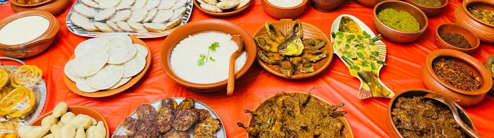
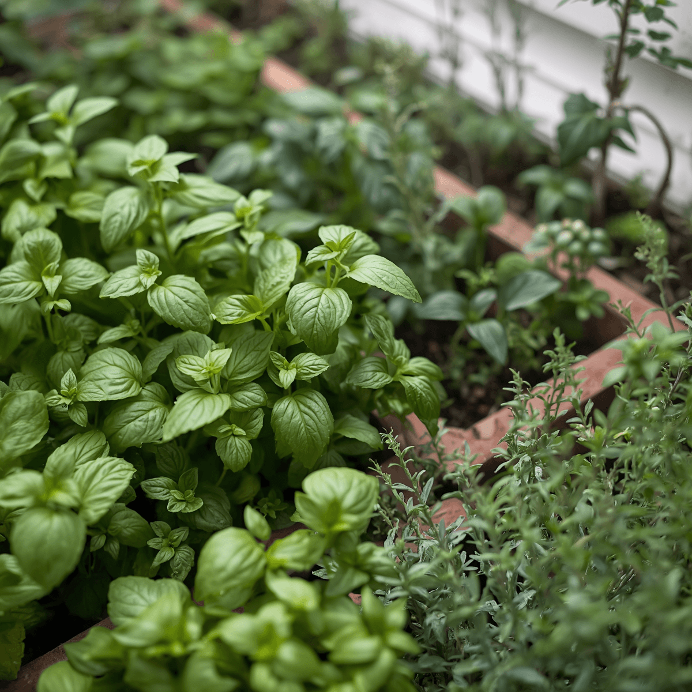

Our Authenticity
The Taste of WaterLily was created by and for Bangladeshi immigrants initially. Our mission is to spread the joy of good Bangladeshi food and our Bangladeshi culture of Hospitality.
Our Food
Our Menu ranges from regular homemade food that average people of Bangladesh have on a daily basis to exclusive Bangladeshi platters.
Our Ingredients

We prepare our food using premium ingredients. We source our ingredients from premium sources. We have a herb garden in-house.
Halal Certified
Our food is Zabiha Halal. Our Staff maintains high standards of professional standards to maintain your comfort.